Ion Gaztañaga <igaztanaga@gmail.com>
我确信许多 C++ 程序员都想过, 好用的老牌 realloc 在 C++ 中处于什么位置. 这是个好问题. 我们能否使用内存扩展机制来改善 std::vector 的性能, 避免过多复制? 但 std::vector 并不是唯一能从一些经典内存分配策略中受益的容器: 如果我们能利用一种突发分配机制, 在 std::list 中一次插入多个元素, 从而摊销使用单节点分配策略时无法摊销的开销 (互斥锁、查找...) 会怎样? 对于节点容器, 一些节省空间的策略也值得考虑: 我们能否找到一种机制, 构建一个既提供简单分离存储策略的节省大小好处 (参见 Boost.Pool), 又不会在大多数节点已被释放时产生过大的节点池的内存分配器?
本文将解释一些经典的改进策略如何应用于 C++ 分配器. 其中许多机制已用于共享内存分配器和容器 (参见 Boost.Interprocess), 那里的大小限制比堆分配器更严格, 且其他策略 (如 per-thread-pthread 池) 并不适用. 因此我们将使用 Boost.Interprocess 容器来衡量在 C++ 中使用这些经典策略所能获得的速度提升.
显然, 这些 C++ 分配器需要某个底层通用分配器, 因为 new 和 delete 不提供扩展和突发能力. 在本文中, 我们将使用修改过的 Doug Lea Malloc, aka DLmalloc 内存分配器, 它带有新的基础函数, 提供实现所有这些经典策略所需的底层机制. DLmalloc 以极高的体积与速度效率著称, 许多 malloc 实现都以该分配器为基础, 包括构建在 DLmalloc 之上的多线程分配器 (参见 ptmalloc2, ptmalloc3 或 nedmalloc ). 因此, 经典策略应用于 C++ 所获得的改进将体现真实世界的加速, 即使该分配器本身已非常高效.
我开发了一些额外的类, 如 STL 分配器、内存池和测试, 我将所有这些代码置于 Boost 软件许可证之下, 并遵循了 Boost 准则, 使所开发的代码可以被视为已集成到 Boost.Container 中.
vector已有几个 C++ 提案提议为标准分配器添加原地扩展机制 (由 Howard Hinnant 撰写的 N1953: Upgrading the Interface of Allocators using API Versioning, 以及我基于 Hinnant 提案撰写的 N2045: Improving STL allocators). 遗憾的是, 它们未在委员会中获得太多关注, 但如果 C++ 社区表现出一定兴趣, 我们有望在 C++1x 中获得其中一些功能. 让我们简要回顾一下这些提案的内容:
Hinnant 的提案为 C++ 分配器添加了一些新功能:
第一个功能有助于避免浪费内存分配器出于对齐原因或其自身内存分配算法而在缓冲区末尾添加的宝贵字节. 例如, 32 位系统上的 DLmalloc 每次分配最少需要 16 字节 (4 字节是载荷, 12 字节可供用户使用): 如果我们尝试为一个 4 字符窄字符串 (std::string) 初始化 "abcd", 我们将浪费 8 字节, 因为我们无法得知新分配的缓冲区中还有能用于更长字符串的空间, 除非再次经过分配器. 其他分配器浪费的内存甚至更多. 在 64 位系统中, 最小大小 (因而浪费) 更大: 32 字节 (24 字节可供用户使用) 属于 DLmalloc.
第二个功能是 realloc 在 C 中的经典用例: 程序员不分配新缓冲区, 而是尝试扩展当前缓冲区. 若扩展成功, 则无需将数据复制到新缓冲区 (在 C++ 中, 这意味着避免可能代价高昂的复制构造函数). 第三个功能正好相反: 一个已经大幅增长过的 vector 现在只剩少量元素, vector.capacity() 远大于 vector.size(), 我们想把内存归还给系统. 许多程序员使用 shrink-to-fit 技巧 将内存归还系统, 但这一技巧需要一次可能抛出异常的复制, 而由分配器实现的 shrink-to-fit 操作则完全不需要任何复制.
最后一个功能非常有趣, 因为 vector 通常使用增长因子 (通常为 1.5f 或 2.0f) 来增加容量, 以避免过多的重新分配. 也就是说, 当我们向 vector 插入新对象且 vector.capacity() == vector.size() 时, vector 分配的内存远多于插入新对象所需的大小. 在分配新内存以插入新对象时, limit size 为 size() + 1, preferred size 为 size()*growth_factor 且 received size 为缓冲区的实际大小. 向 vector 插入新元素时, 扩展现有内存以容纳新元素通常比分配一个更大的新缓冲区更好.
N2045 做了一些补充:
operator new 和 operator
new[].第一项补充对嵌入式系统和其他大小受限的内存 (如固定大小的共享内存) 很有用. 若 vector 只能向前扩展, 则当之前的空闲内存不够大时 (即不足当前缓冲区的 1.5 或 2.0 倍), 它无法复用这些内存. 有了向后扩展, 这一限制消失, 并且向后扩展可与向前扩展结合以优化内存使用.
vector 必须向后复制元素, 因此向后扩展需要的复制次数与新分配完全相同. 通常情况下, 向后扩展可以在某些能够快速访问前后内存缓冲区的内存算法中非常高效地实现. 向后扩展也有一些缺点:
sizeof(Type) == 12 的类型的缓冲区无法向后扩展 16 字节, 因为旧起点与新起点之间的距离不是 12 的倍数, 因而旧对象会被部分覆盖, 无法安全地进行移动赋值.第二项补充试图将多次扩展或分配内存的尝试合并为单次调用, 因为 vector 通常会先尝试扩展内存, 若失败则尝试分配新缓冲区. 由于与互斥锁以及分配器执行的其他检查相比, 检查扩展能力相当快, 因此这两个函数可以合并为一次调用.
第三项补充 (分离节点与数组分配) 基于以下事实: 有了扩展函数之后, 基于节点分配器的经典分离存储池将无法成为具有扩展能力的分配器. 对于像 std::list 这样的纯节点容器, 这听起来或许不是大问题, 但像 std::unordered_map 这样的混合容器将无法同时使用分离存储 (用于节点) 和扩展特性 (用于桶数组).
此外, 一些分配器 (参见 N2554 The Scoped Allocator Model (Rev 2)) 可以通过容器传播, 因此拥有一个既能使用原地扩展能力又能使用节点池化能力的分配器非常有意义. 而这只有当分配器对单元素操作和数组操作使用不同函数时才能实现.
最后两项补充只是减少锁定和最小化分配调用次数的优化.
Hinnant 的提案已在 Freescale (当时的 Metrowerks) 标准库 (MSL) 中实现, 非常成功. 我的方法则在 Boost.Interprocess 中实现. 本文是我上一个提案的演进, 但将这些技术应用到一个广泛使用的堆分配器上.
allocation_command. 以下是该函数的说明:
enum allocation_type
{
//Bitwise OR (|) combinable values
allocate_new = ...,
expand_fwd = ...,
expand_bwd = ...,
shrink_in_place = ...,
try_shrink_in_place = ...,
nothrow_allocation = ...
};
template<class T>
std::pair<T *, bool> allocation_command
( allocation_type command, std::size_t limit_size
, std::size_t preferred_size, std::size_t &received_size, T *reuse_ptr = 0);
此函数的前置条件:
command 必须至少包含以下值之一: shrink_in_place, try_shrink_in_place, try_shrink_in_place, expand_fwd, expand_bwd 或 allocate_new.command 包含值 shrink_in_place, 则它不能包含以下任何值: expand_fwd, expand_bwd, allocate_new, try_shrink_in_place.command 包含值 try_shrink_in_place, 则它不能包含以下任何值: expand_fwd, expand_bwd, allocate_new, shrink_in_place.command 包含 expand_fwd 或 expand_bwd, 则参数 reuse_ptr 必须非空且由先前的分配函数返回.command 包含值 shrink_in_place, 则参数 limit_size 必须大于或等于参数 preferred_size.command 包含以下任一值: expand_fwd 或
expand_bwd, 则参数 limit_size 必须小于或等于参数 preferred_size.此函数的效果如下:
command 包含值 shrink_in_place, (可选地附加 nothrow_allocation), 该函数将尝试把指针 reuse_ptr 引用的内存块的大小缩减为值 preferred_size 只移动块的末尾. 若不可能, 它将尽可能多地缩减内存块的大小, 只要结果满足
size(p) <= limit_size. 仅当结果满足 preferred_size
<= size(p) 和 size(p) <= limit_size 时才报告成功.command 包含值 try_shrink_in_place, (可选地附加 nothrow_allocation), 该函数的行为如同请求了一个 shrink_in_place, 但不会收缩缓冲区. 此函数可用于了解在给定参数下收缩操作是否会成功, 并在参数 received_size 中获得一个保证能在后续就地收缩操作中作为 limit_size 成功的值. 此函数可用于准确了解调用者应使用给定的 limit_size 和 preferred_size 销毁多少对象.command 仅包含值 expand_fwd (可选地附加 nothrow_allocation), 分配器将尝试仅移动块的末尾, 把复用指针所引用内存块的大小增加到值 preferred_size. 若不可能, 它将尽可能多地增加内存块的大小, 只要结果满足 size(p) >= limit_size. 仅当结果满足 limit_size <= size(p) 时才报告成功.command 仅包含值 expand_bwd (可选地附加 nothrow_allocation), 分配器将尝试把指针 reuse_ptr 所引用内存块的起点仅移动到返回的新位置 new_ptr 来增加其大小. 若不可能, 它将尽可能多地移动块的起点, 只要结果满足 size(new_ptr)
>= limit_size. 仅当结果满足 limit_size <=
size(new_ptr) 时才报告成功.command 仅包含值 allocate_new (可选地附加 nothrow_allocation), 分配器将尝试为 preferred_size 个对象分配内存. 若不可能, 它将尝试至少为 limit_size 个对象分配内存.command 仅包含 expand_fwd 和 allocate_new 的组合 (可选地附加 nothrow_allocation), 分配器将首先尝试向前扩展. 若失败, 它会尝试新的分配.command 仅包含 expand_bwd 和 allocate_new 的组合 (可选地附加 nothrow_allocation), 分配器将首先尝试在必要时使用两种方法获得 preferred_size 个对象. 若失败, 它将尝试在必要时使用两种方法获得 limit_size 个对象.command 仅包含 expand_fwd 和 expand_bwd 的组合 (可选地附加 nothrow_allocation), 分配器将首先尝试向前扩展. 若失败, 它将尝试通过向后扩展或向前与向后扩展的组合获得 preferred_size 个对象. 若仍失败, 它将尝试在必要时使用两种方法获得 limit_size 个对象.command 仅包含 allocation_new, expand_fwd 和 expand_bwd 的组合 (可选地附加 nothrow_allocation), 分配器将首先尝试向前扩展. 若失败, 它将尝试通过新分配、向后扩展或向前与向后扩展的组合获得 preferred_size 个对象. 若仍失败, 它将尝试使用相同的方法获得 limit_size 个对象.received_size. 失败时, 分配器会在 received_size 中写入一个可能成功的 limit_size 参数, 供新调用使用.若满足以下两个条件则抛出异常:
nothrow_allocation.此函数返回:
nothrow_allocation, 则当分配/扩展失败或前置条件存在错误时, 第一个成员将为 0.备注:
char 作为模板实参, 返回的缓冲区将适当地对齐, 可以容纳任何类型.char 作为模板实参并执行了向后扩展, 则虽然返回的缓冲区对齐正确, 但可能并不适用, 因为新起点与旧起点之间的距离可能不是用户想构造类型的倍数 —— 由于内部限制, 扩展可能略大于请求的字节数. 执行向后扩展时, 如果旧缓冲区中已有已构造的对象, 正确指定类型非常重要.显然, 我们需要一个提供这些能力的底层 C 函数. 我已将以下函数添加到修改版 dlmalloc 库中:
typedef struct boost_cont_command_ret_impl
{
void *first;
int second;
}boost_cont_command_ret_t;
boost_cont_command_ret_t boost_cont_allocation_command
( allocation_type command , size_t sizeof_object
, size_t limit_objects , size_t preferred_objects
, size_t *received_objects , void *reuse_ptr );
此函数完成与 allocation_command 相同的工作, 因此它接受相同的选项以及一个额外参数 (指示对象的大小, 对向后扩展尤其重要). 此函数不抛出异常, 因为 C 没有异常; 但除这两点之外, 其用法与 allocation_command 完全相同.
要进行公平比较, 我们不能直接拿标准分配器与基于 DLmalloc 的带扩展能力的分配器对比. 为此, 我们开发了一个分配器 (名字毫不意外地叫 ba::allocator). 下面是它的声明:
namespace boost {
namespace container {
template<class T, unsigned Version = 2, unsigned int AllocationDisableMask = 0>
class allocator;
} //namespace container {
} //namespace boost {
第一个模板参数是要分配对象的类型. 第二个是分配器的版本 (详情参见 N1953). 若 Version 为 1, 则该分配器是围绕 dlmalloc 和 dlfree 的符合标准的经典分配器, 无附加特性. 若 Version 为 2, 则该分配器具有扩展能力以及其他特性, 如指定限制大小和首选大小、获取已分配内存的实际大小、分离的节点与数组分配等...
第三个参数是一个掩码, 可用于禁用某些能力. 例如, 指定 expand_bwd | expand_fwd 将禁用向前和向后扩展, 分配器将只提供新缓冲区分配.
vector首先介绍将在性能测试中使用的类. 它是对 int 的简单封装, 其复制构造函数完成的工作相当于 C++0x 中大多数移动构造函数. 当然, 对于可复制但不可移动的重型对象, 性能收益会更大, 但我认为这个类已经足够公平.
class MyInt
{
int int_;
public:
MyInt(int i = 0) : int_(i){}
MyInt(const MyInt &other)
: int_(other.int_)
{}
MyInt & operator=(const MyInt &other)
{
int_ = other.int_;
return *this;
}
};
现在, 我们将逐个向 vector 尾部压入元素, 并使用 Boost.DateTime 计时:
unsigned int numalloc = 0, numexpand = 0, capacity = 0;
ptime tini = microsec_clock::universal_time();
for(unsigned int r = 0; r != num_iterations; ++r){
bi::vector<MyInt, IntAllocator> v;
v.reset_alloc_stats(); //Reset allocation statistics
for(unsigned int e = 0; e != num_elements; ++e)
v.push_back(e);
numalloc += v.num_alloc; numexpand += v.num_expand_fwd;
capacity = static_cast<unsigned int>(v.capacity());
}
ptime tend = microsec_clock::universal_time();
//...
我们将测试 4 种不同的分配器:
std::allocator<int>, 即 C++ 编译器自带的标准分配器ba::allocator<int, 1>, 一个围绕 dlmalloc 和 dlfree 的符合 STL 的分配器.ba::allocator<int, 2, expand_bwd |
expand_fwd>, 一个能够指定缓冲区的限制大小、首选大小和实际大小, 但禁用了扩展能力的分配器.ba::allocator<int, 2>, 一个功能完备的改进分配器. (注意: 无需禁用向后扩展, 因为向前扩展总是优先于新分配和向后扩展).并且我们将使用几种 [num_iterations, num_elements] 组合: [10000,
10000], [100000, 1000], [1000000, 100] and [10000000, 10]
对于每个分配器, 我们将展示以下信息:
push_back 速度 (以 AllocatorPlusV1 归一化)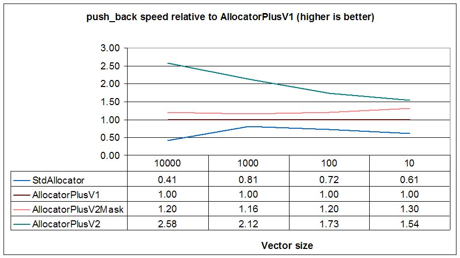
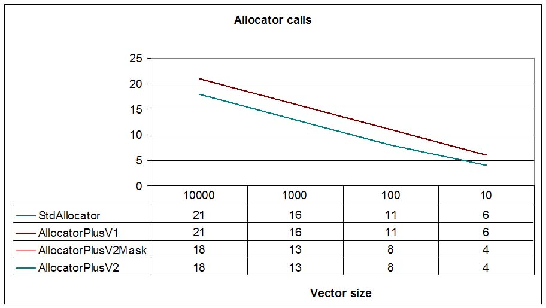
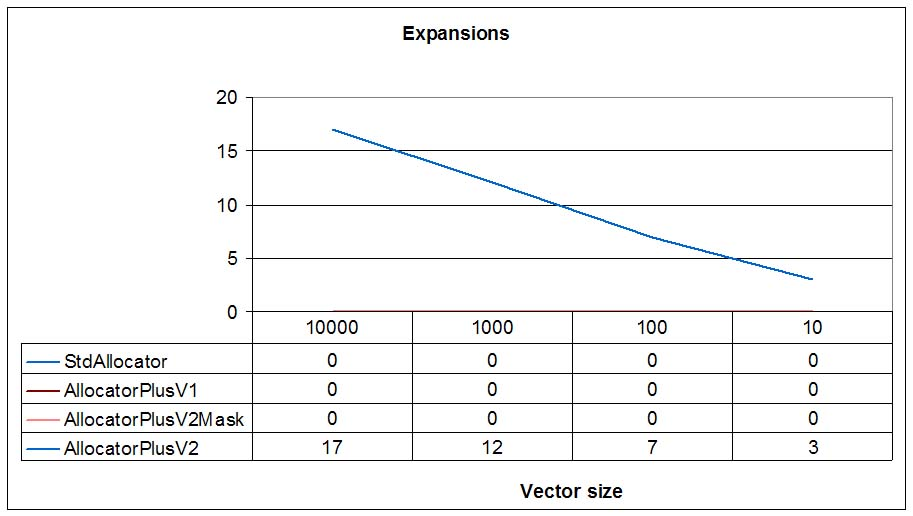
如图所示, DLmalloc 比 MSVC 7.1 提供的标准分配器更快 (StdAllocator 与 AllocatorPlus 对比). 我们还看到, V2 分配器调用分配器函数的次数更少 (size=10 时为 4 次对 6 次), 因为利用 received_size 参数, 容器可以利用 allocation_command 中新分配的小缓冲区的实际大小.
对于大尺寸 (size=10000), 得益于 AllocatorPlusV2 的扩展能力, 它比 AllocatorPlusV2Mask 快一倍, 比符合标准的基于 DLmalloc 的 AllocatorPlusV1 快 2.5 倍. 正如第三张图所示, 只有 AllocatorPlusV2 执行就地扩展, 其余的只分配新缓冲区.
现在, 我们将在使用 gcc-4.1 编译器的 Linux (Suse 10.1) 虚拟机 (VMWare 6) 中执行相同的测试, 并检查 push_back 次耗时:
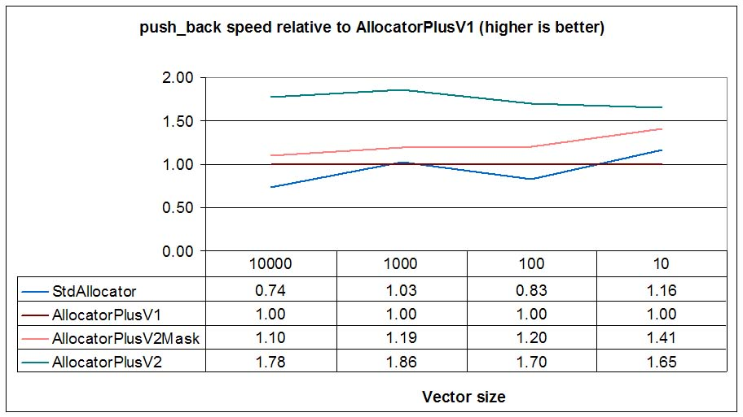
我们看到, 对于某些尺寸, 标准分配器比我们的 V1 (一个符合标准的 DLmalloc 封装) 略快, 而对于更大的尺寸则略慢. 这是因为 glibc malloc 基于 ptmalloc2, 而后者实际上基于 DLmalloc, 但使用了每线程池, 从而最大限度地减少了互斥锁.
与 Windows 中一样, 具备就地扩展能力的分配器比 V1 分配器快一倍, 证实向前扩展能带来可观的速度提升. 在用大量尾部插入填充 vector 的初始化阶段, 这一提升会很明显. 如果 vector 元素是没有移动构造函数的元素 (例如无法用移动语义更新的第三方类), 提升会更加明显.
vector从历史上看, 向后扩展在分配策略中用得不多, 主要是因为对于通常的 vector 实现, 它无法提供向前扩展所带来的速度提升. 与新分配类似, 我们需要移动旧对象 (某些实现可能通过在内存缓冲区开头管理未初始化数据来避免数据移动, 但这并不常见). 向后扩展能够减少 vector 使用的峰值内存 (分配新内存时, vector 必须保留旧缓冲区, 直到把数据复制到新缓冲区), 有效复用位于待扩展缓冲区之前的空闲内存.
如前所述, 向后扩展算法必须计算内存分配对齐 (DLmalloc 中为 8 字节) 与对象大小的最小公倍数 (LCM). 对于像 DLmalloc 这样非常高效的算法, 我发现使用传统的 欧几里得 算法计算 LCM 开销很大, 使向后扩展比新分配慢得多. 必须利用 2 的幂次对齐, 并为同样是 2 的幂或 2、4、8 字节倍数的对象大小实现优化, 使用优化版本计算 LCM. 幸运的是, 这些优化使向后扩展略快于新分配, 使向后扩展在各个方面都优于新分配.
为测试向后扩展, 我们将使用以下 4 种分配器执行相同的 push_back 测试:
std::allocator<int>, 即 C++ 编译器自带的标准分配器ba::allocator<int, 1>, 一个围绕 dlmalloc 和 dlfree 的符合 STL 的分配器.ba::allocator<int, 2, expand_bwd |
expand_fwd>, 一个能够指定缓冲区的限制大小、首选大小和实际大小, 但禁用了扩展能力的分配器.ba::allocator<int, 2, expand_fwd>, 一个功能完备的改进分配器, 但避免向前扩展 (向前扩展优先于向后扩展, 因此需要禁用它以仅测量向后扩展).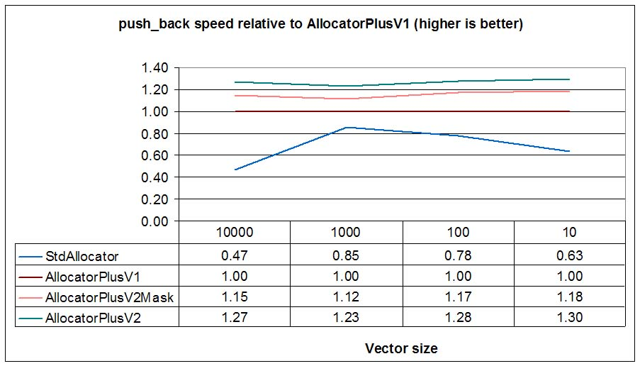
现在在使用 gcc-4.1 编译器的 Linux (Suse 10.1) 虚拟机 (VMWare 6) 中:
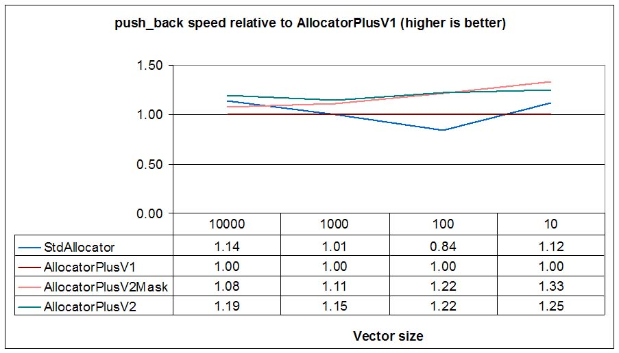
我们看到, 在大多数情况下, 向后扩展 (AllocatorPlusV2) 略快于新分配 (AllocatorPlusV1) 和带 received_size 能力的新分配 (AllocatorPlusV2Mask).
vector shrink-to-fit 是一种广泛使用的惯用法, 可以用 shrink_in_place" 选项 (由 allocation_command 方法提供) 来改进. 为测试此函数, 我们将使用以下测试:
const std::size_t Step = 5;
ptime tini = microsec_clock::universal_time();
typedef boost::interprocess::detail::integral_constant
<unsigned, boost::interprocess::detail::version<Allocator>::value> alloc_version;
for(unsigned int r = 0; r != num_iterations; ++r){
//Create a vector with num_elements size
bi::vector<MyInt, IntAllocator> v(num_elements);
v.reset_alloc_stats();
//Empty the vector erasing the last Step elements and calling shrink_to_fit()
for(unsigned int e = num_elements; e != 0; e -= Step){
v.erase(v.end() - Step, v.end());
v.shrink_to_fit();
}
}
ptime tend = microsec_clock::universal_time();
也就是说, 我们将用初始大小初始化 vector, 擦除最后 Step 个元素 (此处为 5), 并对 vector 的容量执行 shrink-to-fit. 我们将对不同的 [num_iterations, num_elements] 组合重复此操作: [100,
10000], [1000, 200] and [10000, 500]
为测试 shrink-to-fit, 我们将使用以下 3 种分配器执行测试:
std::allocator<int>, 即 C++ 编译器自带的标准分配器ba::allocator<int, 1>, 一个围绕 dlmalloc 和 dlfree 的符合 STL 的分配器.ba::allocator<int, 2, expand_fwd>, 一个具备 shrink-to-fit 能力的功能完备的改进分配器.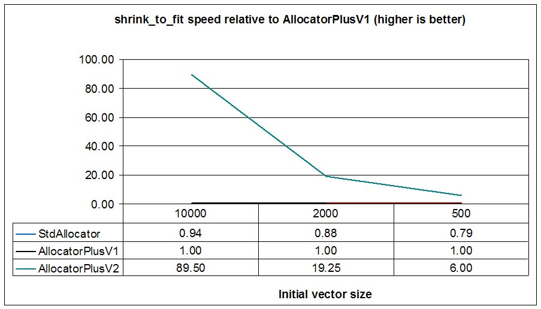
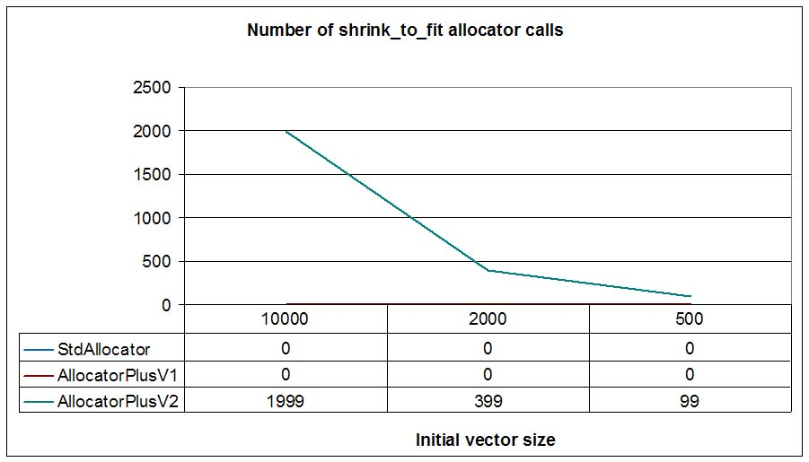
随着初始 vector 大小的增长, AllocatorPlusV2 表现出色 (最快可达 90 倍!), 因为 shrink-to-fit 操作是一种 不抛出 操作, 并且可以具有 摊还常量时间 复杂度, 原因在于分配器通常用一次释放来实现 shrink-to-fit: 分配器把旧缓冲区分成两个独立缓冲区, 并释放第二个缓冲区. 另一方面, 使用没有 shrink-to-fit 功能的分配器的 vector 则需要分配新缓冲区、把元素移动到新缓冲区 (移动元素是关于 vector 大小的线性操作) 并释放旧缓冲区.
现在, 我们将在使用 gcc-4.1 编译器的 Linux (Suse 10.1) 虚拟机 (VMWare 6) 中执行相同的测试, 并检查 push_back 次耗时:
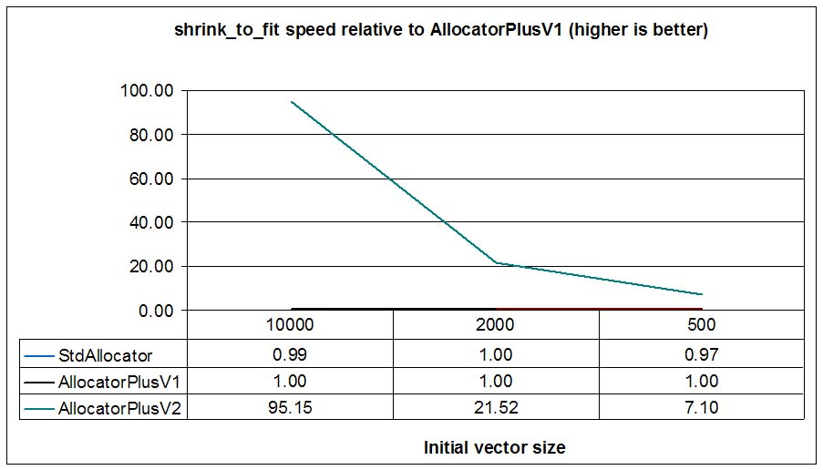
结果与 Windows 的结果类似, 且随着初始 vector 大小的增长, AllocatorPlusV2 的优势越来越明显.
很多时候, 若把操作打包成组执行会更快, 因为某些成本与操作的数量无关, 而与组的数量相关. 这类操作的一个例子是 vector 中的 template 操作. 若 Iterator 是前向迭代器, 大多数实现会计算 begin 与 end 之间的距离, 以便知道容纳所有这些元素所需的缓冲区大小. 有了这一信息, 它们只需执行一次分配即可插入整个范围.
其他容器无法利用这一可能性, 因为它们是 节点 容器: 意味着每个元素都通过一次分配单个元素的分配器调用获得. 由于每个元素拥有自己独立的内存, 这些容器提供更强的迭代器有效性保证, 指向已插入对象的指针和引用不容易失效. 另一方面, 向这些容器插入 N 个元素需要 N 次分配器调用.
为解决这一问题, 想法是提供一个能在单次调用中分配大量对象的函数, 同时保证 每个对象都可以被单独释放. 一些内存管理算法提供了这种可能, 甚至可以为组中的每次操作指定不同的缓冲区大小. 例如, DLmalloc 提供以下两个函数:
void** independent_calloc(size_t n_elements, size_t element_size, void*chunks[]);
解释: independent_calloc 与 calloc 类似, 但它不是返回一块清零的空间, 而是返回一个指针数组, 指向 n_elements 个独立的、可容纳 elem_size 大小内容的元素, 每个元素初始为清零状态, 并且可以独立释放、realloc 等. 这些元素保证被相邻分配 (多次 calloc 或 malloc 不保证这一点), 这在某些应用程序中还可以改善缓存局部性. [...]
void** independent_comalloc(size_t n_elements, size_t sizes[], void* chunks[]);
解释: independent_comalloc 一次性分配一组 n_elements 个块, 大小由 "sizes" 数组指定. 它返回一个指向这些元素的指针数组, 每个元素都可以独立释放、realloc 等. 这些元素保证被相邻分配 (多次 calloc 或 malloc 不保证这一点), 这在某些应用程序中还可以改善缓存局部性. [...]
对于这两个函数, 每个元素在不再需要时必须单独释放, 且对象保证被连续分配 (以帮助缓存局部性). 另外, "chunks" 参数是可选的 (即可以为 null, 这可能是最典型的用法). 若为 null, 返回的数组本身是动态分配的, 在不再需要时也应释放. 否则, chunks 数组的长度必须至少为 n_elements. 它会被填入指向各块的指针.
根据 DLmalloc 文档, independent_calloc 简化并加速了许多种类的池的实现. 在构建初始具有固定数量固定大小节点、但该数量在编译期未知, 且某些节点之后可能需要释放的大型数据结构时, 它也可能有用:
struct Node { int item; struct Node* next; };
struct Node* build_list() {
struct Node** pool;
int n = read_number_of_nodes_needed();
if (n <= 0) return 0;
pool = (struct Node**)(independent_calloc(n, sizeof(struct Node), 0);
if (pool == 0) die();
// organize into a linked list...
struct Node* first = pool[0];
for (i = 0; i < n-1; ++i)
pool[i]->next = pool[i+1];
free(pool); // Can now free the array (or not, if it is needed later)
return first;
}
根据 DLmalloc 文档, independent_comalloc 可用于在必须同时分配多个结构体或对象的情况下加速分配:
struct Head { ... }
struct Foot { ... }
void send_message(char* msg) {
int msglen = strlen(msg);
size_t sizes[3] = { sizeof(struct Head), msglen, sizeof(struct Foot) };
void* chunks[3];
if (independent_comalloc(3, sizes, chunks) == 0)
die();
struct Head* head = (struct Head*)(chunks[0]);
char* body = (char*)(chunks[1]);
struct Foot* foot = (struct Foot*)(chunks[2]);
// ...
}
遗憾的是, 这两个函数在与某些容器配合时存在一些缺点:
list 分配一个数组来保存指向这些节点的指针), 并给节点容器带来不必要的开销.第一个问题 (所需的外部或内部分配的数组) 可以通过以下方式避免: 让每个内存节点与一个侵入式单向链表链接, 并提供类似迭代器的接口. 该侵入式链表构建在为用户数据保留的前几个字节中, 因为最小节点大小保证 32 位系统有 12 字节、64 位系统有 24 字节. 显然, 一旦用户覆盖了那块内存, 就无法迭代到下一个节点, 因此程序员必须小心. 让我们介绍这些新函数:
这些函数提供 C++ 输入迭代器的模拟./* Iterator functions */ typedef /**/ multialloc_it_t;/* Iterator type */ BOOST_CONTAINER_INIT_END_IT(IT)/* Postcondition: BOOST_CONTAINER_IS_END_IT(IT) != 0 */ BOOST_CONTAINER_IS_END_IT(IT)/* Is an end iterator? */ BOOST_CONTAINER_NEXT_IT(IT)/* operator ++ emulation */ BOOST_CONTAINER_ADDR_IT(IT)/* operator* emulation, returns the address of the memory */
这些函数可以把之前由 DLmalloc 分配的节点构建成侵入式链 (表), 并获得可遍历它们的迭代器. 这些函数用于构建一个可以随后用/* Multiallocation chain functions */ typedef /**/ multialloc_it_chain_t;/* Chain type */ BOOST_CONTAINER_IT_CHAIN_INIT(CHAIN)/* Postcondition: BOOST_CONTAINER_IT_CHAIN_IT(IT_CHAIN) is end it */ BOOST_CONTAINER_IT_CHAIN_PUSH_BACK(CHAIN, MEM)/* Push back the node MEM in the intrusive linked list chain */ BOOST_CONTAINER_IT_CHAIN_PUSH_FRONT(CHAIN, MEM)/* Push front the node MEM in the intrusive linked list chain */ BOOST_CONTAINER_IT_CHAIN_SPLICE_BACK(CHAIN, CHAIN2)/* Splice chain2 in the end of the first chain */ BOOST_CONTAINER_IT_CHAIN_IT(IT_CHAIN)/* Return an input iterator that traverse the chain */ BOOST_CONTAINER_IT_CHAIN_SIZE(IT_CHAIN)/* Returns the size of the chain */
boost_cont_multidealloc() 在单次调用中删除的范围 (见下文). /* Some defines for "contiguous_elements" parameters */ DL_MULTIALLOC_ALL_CONTIGUOUS/* Allocate all elements contiguous on memory */ DL_MULTIALLOC_DEFAULT_CONTIGUOUS/* The implementation chooses the maximum contiguous elements /* Burst allocation: Allocates "n_elements nodes" of size "elem_size" with a maximum (if possible) of "contiguous_elements". On success returns an input iterator. On failure returns an "end" iterator.*/ multialloc_it_t boost_cont_multialloc_nodes (size_t n_elements, size_t elem_size, size_t contiguous_elements);/* Burst allocation: Allocates "n_arrays" of elements, whose size is "sizeof_element" and whose lengths are specified in the "sizes" parameter. Contiguous memory won't be (if possible) bigger than "contiguous_elements"*sizeof_element. On success returns an input iterator. On failure returns an "end" iterator.*/ multialloc_it_t boost_cont_multialloc_arrays (size_t n_arrays, const size_t *lengths, size_t sizeof_element, size_t contiguous_elements);/* Burst deallocation: deallocates all the range specified by the iterator */ void boost_cont_multidealloc(multialloc_it_t it);
boost_cont_multialloc_nodes 是一个在同一次调用中分配多个相同大小节点并返回指向该范围的迭代器的函数. 是一个在同一次调用中分配多个数组并返回指向该范围的迭代器的函数. 用户可以在两个函数中指定 (建议的) 连续元素数量. boost_cont_multidealloc 释放由 boost_cont_multialloc_nodes, boost_cont_multialloc_arrays 或其他 DLmalloc 函数分配并用 BOOST_CONTAINER_IT_CHAIN_XXX 函数链接起来的数组或节点范围.
有了这把低层瑞士军刀, 我们就可以为突发分配定义一个 C++ 接口:
template<class T>
class allocator
{
//...
typedef /**/ multiallocation_iterator; //wrapper over multialloc_it_t
typedef /**/ multiallocation_chain; //wrapper over multialloc_chain_t
//------------------------------------------------------------------
// Functions for array allocation (expandable memory)
//------------------------------------------------------------------
//Allocates many elements of size elem_size in a contiguous block
//of memory. Elements must be individually deallocated with deallocate()
multiallocation_iterator allocate_many(size_type elem_size, size_type n_elements);
//Allocates n_elements elements, each one of size elem_sizes[i]
//Elements must be individually deallocated with deallocate()
multiallocation_iterator allocate_many(const size_type *elem_sizes, size_type n_elements);
//Deallocates the memory arrays pointed by the iterator range starting at it
void deallocate_many(multiallocation_iterator it);
//------------------------------------------------------------------
//Functions for node (size == 1, non-expandable memory) allocation
//------------------------------------------------------------------
//Allocates many elements of size == 1.
//Elements must be individually deallocated with deallocate_one()
multiallocation_iterator allocate_individual(size_type num_elements);
//Deallocates the memory nodes pointed by the iterator range starting at it
void deallocate_individual(multiallocation_iterator it);
};
突发分配同样遵循节点 (size == 1) 分配函数与数组分配函数的分离, 使节点分配可以使用分离存储机制, 而数组分配可以使用另一种可与扩展函数配合的方法 (allocation_command).
我们已经拥有实现 STL 容器突发分配和释放所需的一切. 现在, 让我们测量这是否能带来任何速度提升.
利用突发分配的一个好地方是范围插入. 其他操作 (范围赋值、复制构造) 也是实现突发分配的好地方. 那么, 让我们用几个分配器试试这段代码来测试插入时间:
tini = microsec_clock::universal_time();
bi::list<MyInt, IntAllocator> l;
for(unsigned int r = 0; r != num_iterations; ++r){
l.insert(l.end(), num_elements, MyInt(r));
}
tend = microsec_clock::universal_time();
也就是说, 我们将尝试不同的范围大小 (num_elements) 和不同的迭代次数 (num_iterations). 最终 list 中的元素数量相同, 便于比较结果. 为测量突发释放, 我们将预处理几个迭代器范围, 并测量完全清空 list 所需的时间:
//Now preprocess ranges to erase
std::vector <typename bi::list<MyInt, IntAllocator>::iterator> ranges_to_erase;
ranges_to_erase.push_back(l.begin());
for(unsigned int r = 0; r != num_iterations; ++r){
typename bi::list<MyInt, IntAllocator>::iterator next_pos(ranges_to_erase[r]);
std::size_t n = num_elements;
while(n--){ ++next_pos; }
ranges_to_erase.push_back(next_pos);
}
//Measure range erasure function
tini = microsec_clock::universal_time();
for(unsigned int r = 0; r != num_iterations; ++r){
l.erase(ranges_to_erase[r], ranges_to_erase[r+1]);
}
tend = microsec_clock::universal_time();
如图所示, 除了 clear() 和析构函数之外, 范围擦除也是利用突发分配的好地方.
我们将测试 3 种不同的分配器:
std::allocator<int>, 即 C++ 编译器自带的标准分配器ba::allocator<int, 1>, 一个围绕 dlmalloc 和 dlfree 的符合 STL 的分配器 (无突发分配).ba::allocator<int, 2>, 具备突发分配能力的分配器.[num_iterations, num_elements] 组合使用这些测试值: [200,
10000], [2000, 1000], [20000, 100] and [200000, 10]
对于每个分配器, 我们将展示以下信息:
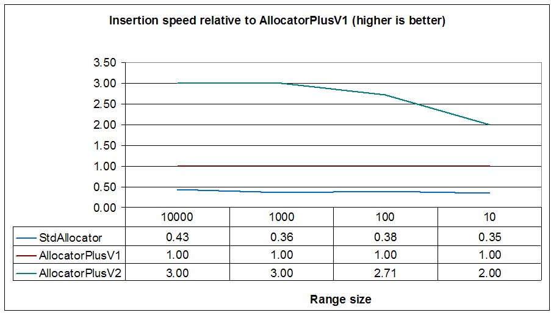
图表显示 AllocatorPlusV1 的每元素分配速度是恒定的 (令人意外的是, Visual 的标准分配器并不那么恒定), 这很合乎逻辑, 因为每个元素都需要一次分配. AllocatorPlusV2 使用 DL_MULTIALLOC_DEFAULT_CONTIGUOUS, 它分配最多 4096 字节的连续节点. 这就是 AllocatorPlusV2 在大范围下性能趋于稳定、达到 3 倍加速的原因.
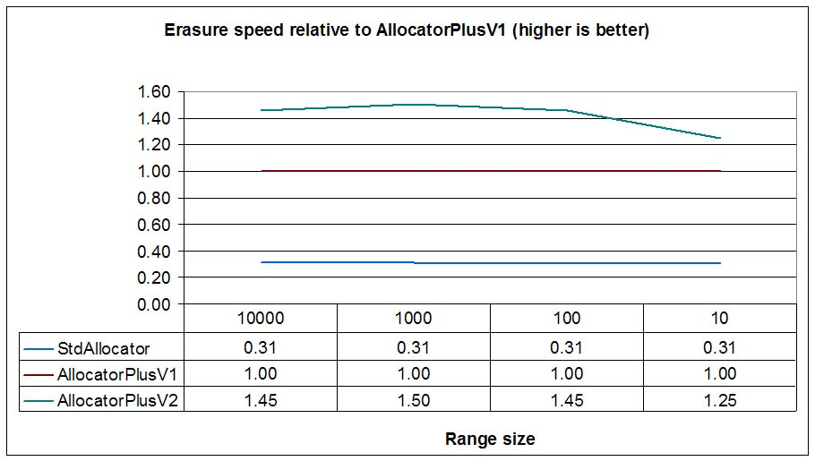
突发释放的改进较为有限, 为什么?
list 必须在调用 deallocate_individual 之前构建节点链 (遍历所有节点). 也就是说, 我们必须遍历节点两次 (一次构建链, 另一次在内部 C 函数中).这意味着突发释放只是普通释放的循环, 摊销互斥锁、检查、函数调用与返回等常见操作的开销. 尽管如此, 测试显示与逐节点释放相比, 在相当大的范围 (>1000) 下有 30% 的加速, 在小范围 (>=10) 下也有可察觉的加速 (20%).
现在, 我们将在使用 gcc-4.1 的 Linux (Suse 10.1) 虚拟机 (VMWare 6) 中执行相同的测试:
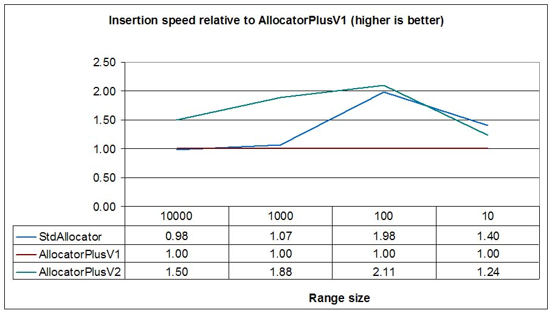
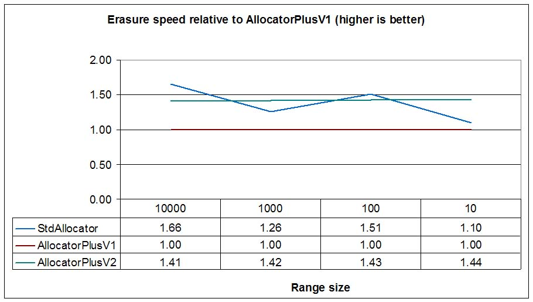
在 Linux 中, 标准分配器 (ptmalloc2, 基于 DLmalloc) 表现非常好, 其每线程池方法所实现的锁减少, 在小范围下提供了与突发分配 (AllocatorPlusV2) 相当的性能. 在更大的范围 (>=100) 下, AllocatorPlusV2 保持 (或多或少) 其性能, 而 StdAllocator 跟不上. 与 WinXP Visual 7.1 测试一样, 在大范围下 AllocatorPlusV2 比 AllocatorPlusV1 更快 (某些情况下最高 2 倍).
在 Linux 中, 突发释放并不比标准分配器快, 这很可能是因为 ptmalloc2 像突发释放一样减少了互斥锁, 但突发释放需要像前面解释的那样遍历待擦除范围两次. 与 AllocatorPlusV1 (即围绕 dlmalloc 和 dlfree 的封装) 相比, 突发释放 (AllocatorPlusV2) 在大范围下快 30%.
在开发用于提升节点容器性能的分配器时, 广泛使用的方法之一是简单分离存储 (例如 Boost.Pool). 简单分离存储背后的想法是把通过通用内存管理器分配的一大块内存 ("block") 划分为固定大小的 "节点". 内存管理器 ("pool") 持有一个 "block" 列表和一个空闲节点的单向链表. 由于所有节点大小相同, 简单分离存储无法服务不同大小的节点. 为解决这一问题, 应用程序为每种大小创建不同的池, 且通常大小相同的不同类型共享同一个池.
空闲节点链表是侵入式的 (由于节点是空闲的, 链表指针就构建在节点内), 因此每个节点 没有大小开销. 简单分离存储非常快:
现在的问题是: 池何时把完全空闲的 "block" (每次空闲节点链表为空时分配) 返回给通用内存管理器, 以便它们可以被其他池或非池分配器复用? 常见的答案是: 通常从不. 为什么? 简单分离存储会从节点上抹掉所有簿记数据, 这使得 "block" 的释放非常昂贵: 池需要遍历空闲节点链表 (节点 不 按其原始 block 排序), 并将每个节点的地址与每个 "block" 的地址比对, 只为检查一个 "block" 的所有节点是否空闲、该 block 是否可以安全释放. 若有 B 个 block 和 N 个节点, 这是 O(N*B) 的操作. 通常 N (和 B) 会相当大, 若应用程序已分配了几万个节点, 这一操作可能耗时 数分钟. 这就是为什么修剪内存的选项只作为 可选 且 显式 的操作提供.
手动操作会使分配器更改不可移植 (手动修剪如何激活? 需要多长时间?), 因此许多应用程序干脆忽略这一操作. 这也有一个缺点: 如果应用程序在容器中分配大量节点然后销毁容器, 池将持有一个很大的空闲节点列表, 但这些内存不会被任何其他不使用相同节点大小池的容器复用, 导致过度的内存浪费.
我们能否兼得简单分离存储的小尺寸开销和快速的连续内存修剪操作? 自适应池背后的想法很简单: 在释放节点时, 高效的自修剪节点池需要快速访问包含该节点的 "block". 若能如此, 池可以检查该 "block" 中有多少空闲节点 ("block" 有一个存储空闲块数量的头部), 若所有节点都空闲, 池就可以把该 block 返回给通用内存管理器.
问题在于在节点中存储簿记数据 (指向包含该节点的 block 的指针) 有大小开销. 但有一种每个节点零大小开销的极快方法来获得指向包含该节点的 block 的指针: 内存对齐.
假设一个 4KB 的 "block" 同时按 4KB 对齐: 节点只需一次掩码操作即可获得 block 的地址. 有了它, 我们可以检查空闲节点的数量, 并在所有节点都空闲时释放该 block. 而一旦能够快速访问 "block", 我们就可以设计更复杂的修剪方案, 促进空闲 "block" 的产生并提高修剪的概率.
分配器通常有一个载荷 (payload) 存储用于释放的簿记信息. 若自适应池分配按 4KB 对齐的 4KB 字节, 它实际会分配 4KB + 载荷字节, 其中非载荷部分的开头按 4KB 对齐. 这意味着与该对齐块相邻的内存不适合新的 4KB 对齐分配, 从而导致过度的内存浪费 (一次 4KB 分配会浪费接下来 4KB - 载荷字节的内存).
有一个简单的解决方案: 分配按 4KB 对齐的 (4KB - 载荷字节) 字节. 这一简单的解决方案使连续内存可用于未来的 4KB 对齐分配, 实现最优内存使用. 这就是为什么对于分配大小不固定的对齐内存分配, 知道载荷的大小非常重要.一旦可以从节点访问其 block, 我们就可以为它们实现不同的策略. 一旦某个 block 完全空闲, 我们可以直接释放它, 但分配模式可能导致多个半使用的 block, 实际上增加了我们正试图最小化的内存使用.
或者, 我们可以实现一种策略来最小化使用中的 block 数量. 我们可以尝试总是从空闲节点较少的 block 分配节点, 至少在理论上这会带来更多完全用满的 block 和更多可以更快释放的完全空闲的 block. 显然, 这种块管理必须非常快: 搜索使用最多的 block 可能毁掉性能, 特别是与高效的简单分离存储相比. 释放节点时也是如此: 如果块管理需要太多操作, 释放的性能可能非常糟糕.
当在一个 chunk 中分配许多节点时, 自适应池可能需要过高的对齐要求. 若一个 block 配置为至少容纳 256 个节点, 节点大小为 24 字节, 则 block 所需大小为 (block 载荷 + 20*256) > 4096 -> 8196 字节, 这也需要 8196 字节的对齐. 这意味着增加 block 可容纳的节点数量也会增加所需的对齐.
若把每个 block 划分为子块, 我们可以改善过高的对齐. 第一个子块包含 block 的载荷, 其余子块只存储指向第一个子块的指针. 这带来了一个额外的自由度: block 开销. 每个 block 的开销 (节点数 * 节点大小)/ (block 大小) 决定子块的大小 (和对齐), 而每个 block 的节点数决定每个 block 的子块数量. 这一技巧使对齐要求比不使用子块的方法 更低, 且随每个 block 节点数保持 恒定. 另一方面, 释放需要额外的间接寻址 (从节点到子块, 再从子块到 block 头部), 块初始化也稍微复杂一些.
adaptive_pool
adaptive_pool 构建自我们修改版 DLmalloc 库的对齐内存分配函数之上. 对齐必须是 2 的幂:
void* boost_cont_memalign(size_t bytes, size_t alignment);
adaptive_pool 按如下方式实现:
以下是 adaptive_pool 的声明:
const std::size_t ADP_nodes_per_block = unspecified;
const std::size_t ADP_max_free_blocks = unspecified
const std::size_t ADP_overhead_percent = unspecified;
const std::size_t ADP_only_alignment = unspecified;
template < class T
, unsigned Version = 2
, std::size_t NodesPerBlock = ADP_nodes_per_block
, std::size_t MaxFreeBlocks = ADP_max_free_blocks
, std::size_t OverheadPercent = ADP_overhead_percent
>
class adaptive_pool;
模板参数说明:
ADP_only_alignment, 则不使用子块, 且 NodesPerBlock 将决定 block 所需的对齐.要分配新节点, adaptive_pool 需要:
要释放新节点, adaptive_pool 需要:
adaptive_pool在本测试中, 我们将测量 8 种分配器:
ba::allocator<int, 1>, 一个围绕 dlmalloc 和 dlfree 的符合 STL 的分配器 (无突发分配).ba::allocator<int, 2>, 具备突发分配能力的分配器.所有池分配器 (分配器 3-8) 都配置为每 block 至少 256 个节点. 对于 int list, 在 32 位系统中, 分配器 3 和 4 (无子块的自适应池) 所需对齐为 4096 字节, 分配器 5 和 6 (有子块的自适应池) 所需对齐为 2048 字节.
对于每个分配器, 我们将展示以下信息:
测试将与 测试突发分配 一节中使用的测试相同. 现在让我们看看在使用 Visual C++ 2003 的 Windows XP 机器 (AMD 1.47 Ghz) 上的测试结果:
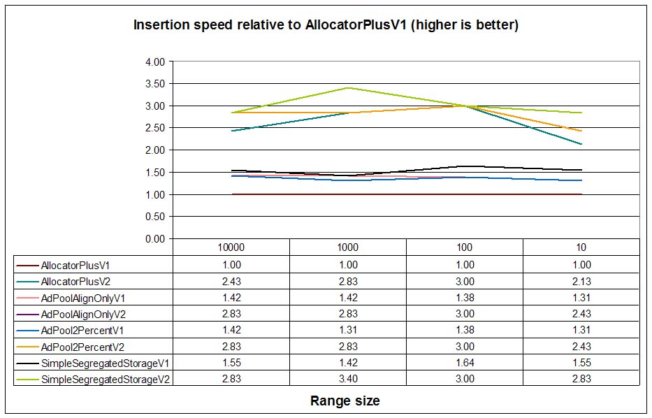
总的来说, 池分配器的插入速度优于 DLmalloc. 仅分析 V1 分配器 (无突发分配) 可以看到 SimpleSegregatedStorageV1 表现最好, 其次是 AdPoolAlignOnlyV1 和 AllocPool2PercentV1. 这很合乎逻辑: 简单分离存储把所有块操作降到最低, 因为它不会即时释放空闲块. AdPoolAlignOnlyV1 和 AllocPool2PercentV1 表现相当接近.
比较 V2 分配器 (启用突发分配) 时, 我们看到所有池分配器的性能都非常接近. 原因在于当池一次连续分配多个节点时, 自适应池略高的成本实际上被降到最低: 所有需要的 block 在单次调用中预分配, 循环中的错误处理可以简化从而得到更紧凑的循环... 有趣的是, 启用突发功能的 DLmalloc (AllocatorPlusV2) 的性能与带突发分配的池相当. 这并不奇怪: DLmalloc 的突发分配使用的机制与池完全相同: 分配大块并从中创建节点. 不同之处在于每节点的开销.
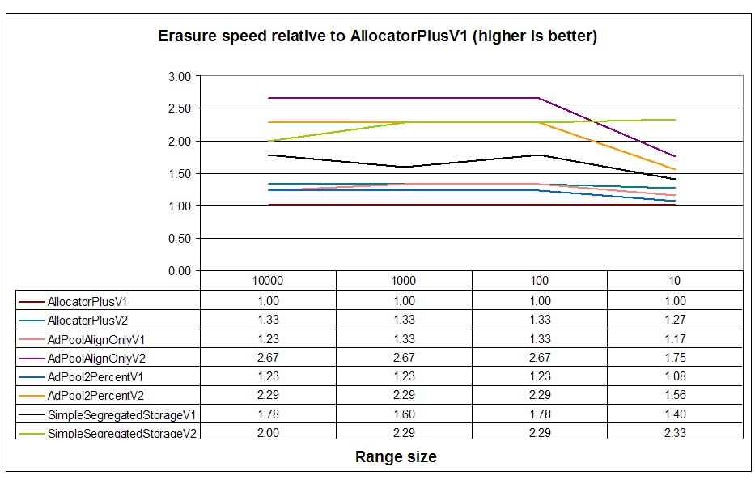
分析释放时, V1 分配器的结果非常接近, SimpleSegregatedStorageV1 领先. 我们必须记住 SimpleSegregatedStorageV1 不执行任何块管理和释放, 所以这是预期的行为. 自适应池的释放时间正好介于 DLmalloc (AllocatorPlusV1) 与分离存储的时间之间. 自适应池执行相当复杂的块管理: 按空闲节点数对空闲块排序, 并在完全空闲块数量超过配置值 (本测试中为 2 个) 时释放完全空闲的块. 正如预期, AdPoolAlignOnlyV2 的表现略好于 AllocPool2PercentV2, 因为释放用 AllocPool2PercentV2 (带子块的自适应池) 分配的节点需要额外的间接寻址才能从节点获得块头部 (先到达子块头部, 该头部存储块头部的地址).
不过, 在分析启用突发功能的分配器时, 情况有所改变: 自适应池的表现与 SimpleSegregatedStorageV2 相近. 同样, 突发分配允许消除一些冗余检查和管理操作, 带来更好的性能并摊销块管理成本.
对于大范围, V2 (突发) 自适应池甚至比简单分离存储略好.
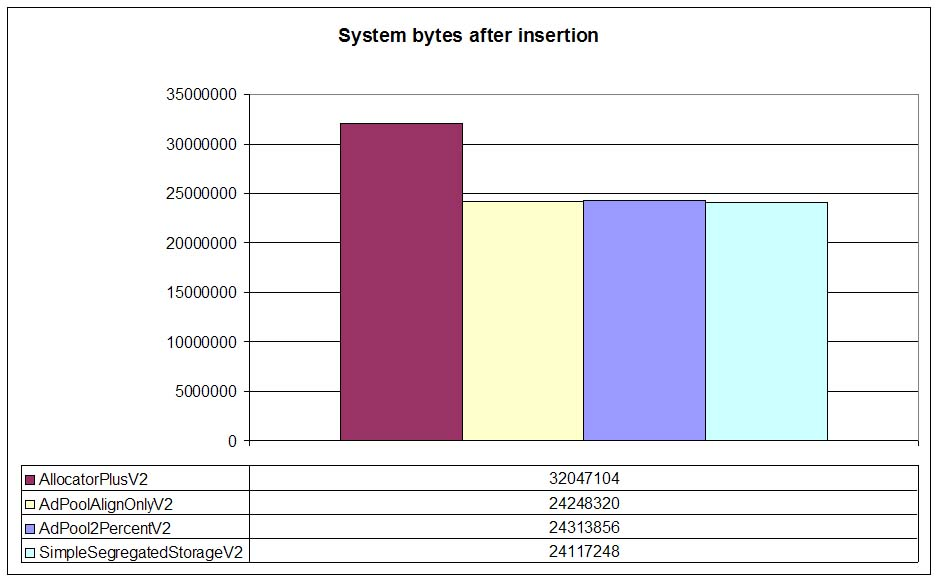
现在让我们看看每种分配器下 DLmalloc 从操作系统分配的内存量 (V1 和 V2 实际分配的内存量相同, 因此我们只展示 V2 分配器). DLmalloc 封装 (AllocatorPlusV2) 分配的内存比其他分配器多. 在 32 位系统中, 已分配节点为 12 字节, 因此 DLmalloc 每节点需要 12 字节 + 开销 (4 字节) = 16 字节. 对于 2000000 个节点, 这约为 32 MB. 对池而言, 由于开销几乎不存在, 总内存约为 24MB (每节点 12 字节).
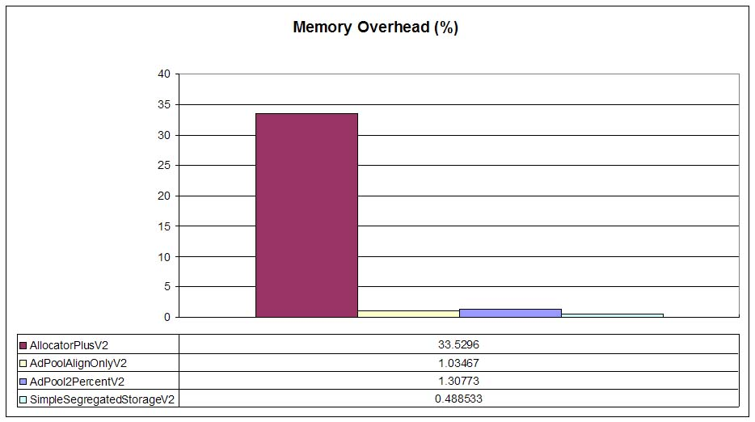
在前一张图中我们可以看到每种分配器的开销 (百分比). 正如预期, DLmalloc 有 33% 的开销 (每 12 字节节点 4 字节), 而池的开销低于 2% (记住我们将 AllocPool2PercentVX 配置为最多 2% 开销). 正如预期, SimpleSegregatedStorageVX 的开销最小, 但自适应池 (带有用于块管理的额外头部) 在大小效率上也非常出色.
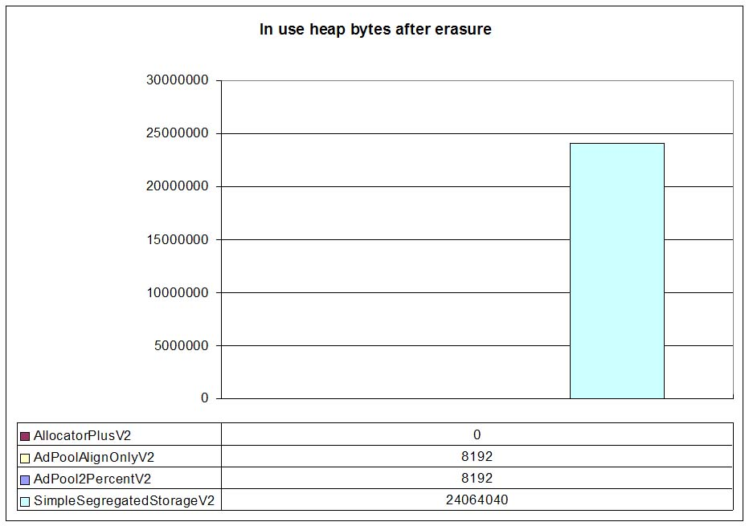
前一张图显示了释放所有节点后 DLmalloc 报告的使用中内存量. 注意, 这不计入 DLmalloc 仍缓存的 OS 内存, 而是通过 DLmalloc 分配且尚未通过 DLmalloc 释放的内存. 换言之, 即池仍持有的内存.
正如预期, DLmalloc 封装 (AllocatorPlusVX) 已释放其所有内存 (无泄漏!). 同样, 简单分离存储分配器没有释放任何块, 因此仍持有全部内存. 自适应池 (AdPoolAlignOnlyVX 和 AllocPool2PercentVX) 只持有我们配置的块数: 2 块 x 每 block 4096 字节 = 8192 字节. 因此我们清楚地展示, 自适应池不仅提供低内存开销和快速分配时间, 还会把内存返回给底层内存分配器!
一旦分配器把内存归还给 DLmalloc, DLmalloc 就可以修剪其缓存的 OS 内存并把内存归还给 OS. 下图显示了所有节点释放后 DLmalloc 缓存的内存量:
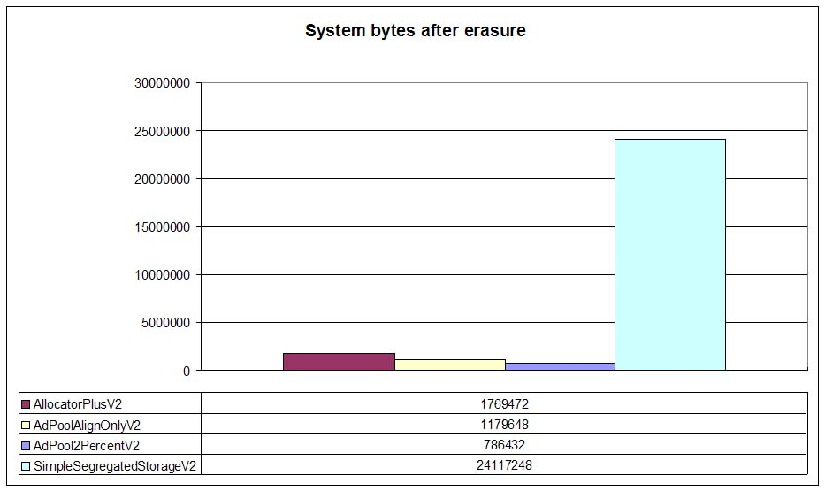
缓存的内存通常取决于 DLmalloc 内部持有的连续空闲页的数量, 因此数字并不重要. 这张图唯一展示的是: 自适应池在把内存归还给 DLmalloc 之后, 也会促进内存修剪, 使 DLmalloc 能够把内存归还给操作系统.
现在, 我们将在使用 gcc-4.1 的 Linux (Suse 10.1) 虚拟机 (VMWare 6) 中执行相同的测试:
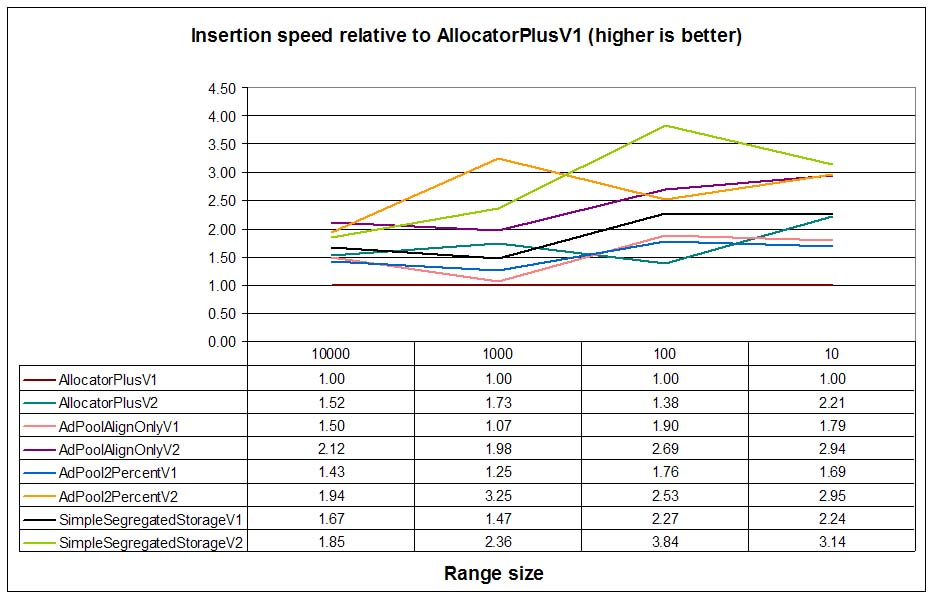
V1 分配器的插入速度基本符合预期, 分离存储领先, 非池的 DLmalloc 封装最慢. 随着插入范围数量的增长, V2 (突发) 分配器更快, 自适应池与简单分离存储性能相近.
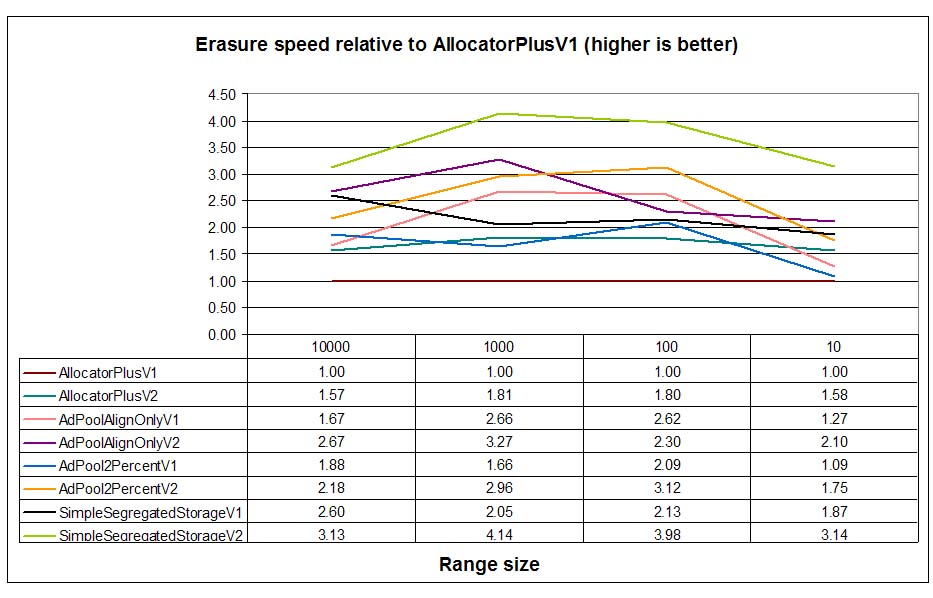
擦除速度与 Windows 相似, SimpleSegregatedStorageVX 领先, 自适应池紧随其后.